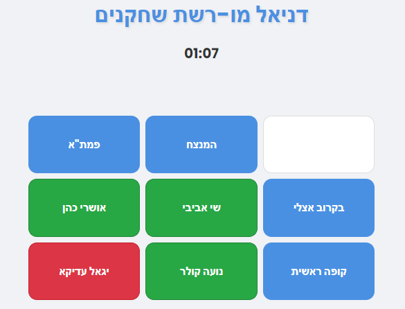

עליכם למצוא בכל משבצת שחקן/ית ששיחקו בשתי הסדרות שבראש השורה ובצד העמודה
עלולה להיות יותר מתשובה אחת נכונה אך קיימת לפחות אחת
אותו שחקן/ית יכולים להופיע מספר פעמים בטבלה
אל תפחדו לטעות, תמיד אפשר לתקן
כאשר תסיימו ותמלאו את כל הריבועים נכון, הזמן ייעצר
!בהצלחה
:משחק לדוגמא
סיימת את המשחק בהצלחה בזמן של